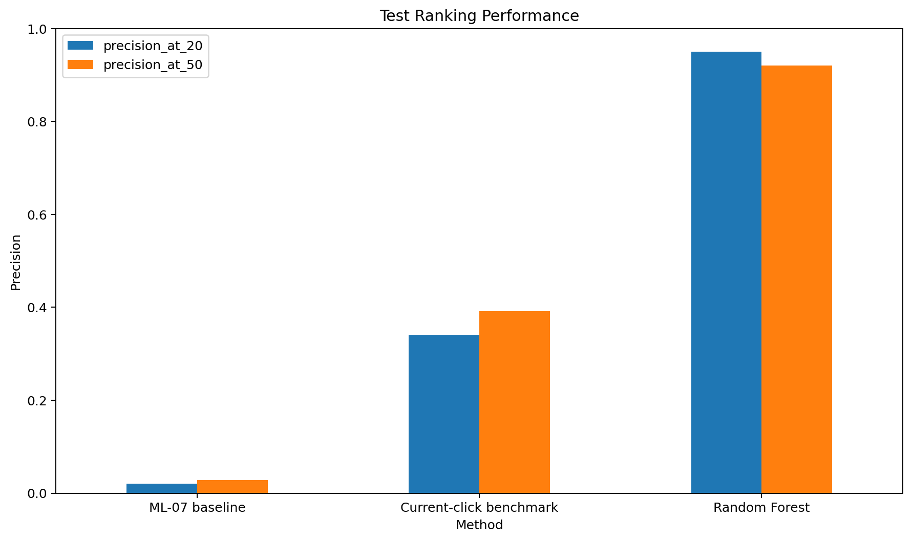
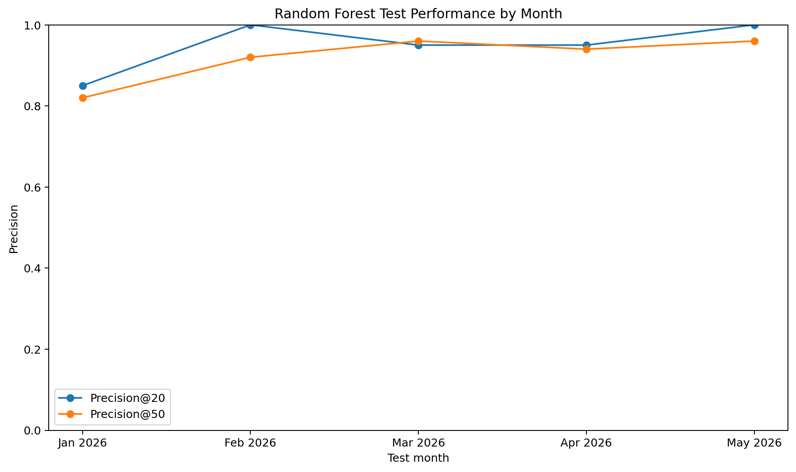
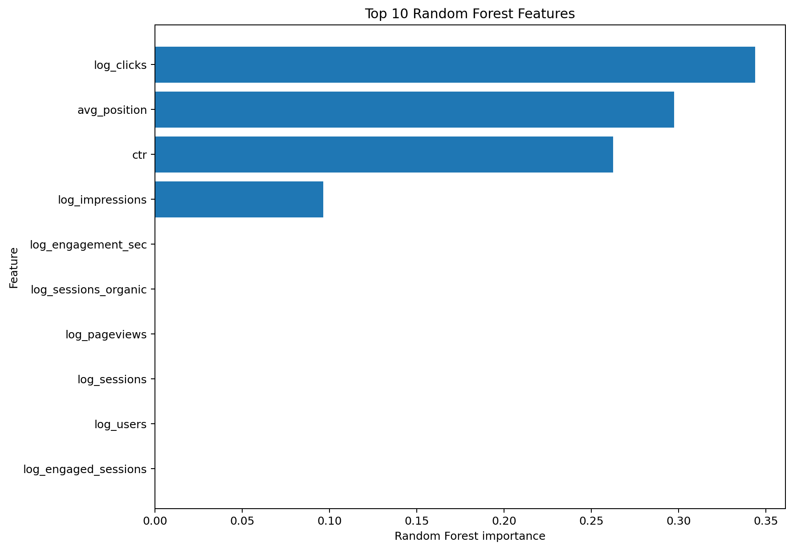

FlyRank ML Internship — Refresh / Content Opportunity Scoring
This study evaluates whether a machine-learning model can improve the ranking of content refresh opportunities compared with a simple visibility-and-CTR baseline. The FlyRank internship warehouse was aggregated to a client-content-month panel and used to predict whether a visibly active content item would receive zero organic clicks in the following month. A Random Forest trained on January-August 2025, validated on September-December 2025, and evaluated on January-May 2026 achieved Precision@20 of 0.950 and Precision@50 of 0.920. The current-click benchmark achieved 0.340 and 0.392, while the ML-07 baseline achieved 0.020 and 0.028. The result provides decision-support evidence for prioritizing manual content review; it does not establish that refreshing a page causes better search performance.
Content teams need practical ways to decide which existing pages should be reviewed first. This study tests whether observable search and engagement signals can produce a better prioritization ranking than a simple visibility-plus-CTR rule.
Can an ML model improve the ranking of content refresh opportunities compared with a simple visibility + CTR baseline?
The study uses the FlyRank internship warehouse covering January 2025 through June 2026. The daily data was aggregated to a client × content × month panel containing 2,871,202 rows and 427,292 distinct content items.
The final labeled dataset contains 608,050 observations from January 2025 through May 2026. The overall positive rate is approximately 33.4%.
The public paper contains no client names, domains, private queries, credentials, or raw exports.
For each item in month t, a positive case is defined as: at least 100 organic impressions in the current month, at least 100 organic impressions in month t+1, and zero organic clicks in month t+1.
Items falling below 100 impressions in the following month are excluded from the evaluation population. This separates visible zero-click outcomes from cases where search visibility itself declines.
The Random Forest uses 26 features calculated from the current snapshot month. These include search-performance signals, engagement measures, traffic-source counts, AI referral counts, and derived ratios such as CTR and engaged-session rate.
| Period | Role |
|---|---|
| Jan–Aug 2025 | Training |
| Sep–Dec 2025 | Validation |
| Jan–May 2026 | Final test |
| Jun 2026 | Recommendation snapshot |
The future outcome is never used as an input feature. The final test period remains separate from model training.
The comparison contains three ranking methods:
ML-07 baseline:
log(1 + impressions) × (1 − CTR)
Current-click benchmark: lower current-month click counts receive higher priority.
Random Forest: 300 trees, maximum depth 10, minimum leaf size 20, balanced subsampling, random seed 42.
The primary metrics are Precision@20 and Precision@50, calculated separately for each test month and then averaged across January-May 2026.
| Method | Precision@20 | Precision@50 |
|---|---|---|
| ML-07 baseline | 0.020 | 0.028 |
| Current-click benchmark | 0.340 | 0.392 |
| Random Forest | 0.950 | 0.920 |
On the same January-May 2026 test population, the Random Forest achieved 2.79× the current-click benchmark's Precision@20 and 2.35× its Precision@50.

| Month | Precision@20 | Precision@50 | Items | Positive rate |
|---|---|---|---|---|
| Jan 2026 | 0.85 | 0.82 | 60,088 | 33.2% |
| Feb 2026 | 1.00 | 0.92 | 73,481 | 31.6% |
| Mar 2026 | 0.95 | 0.96 | 88,482 | 39.6% |
| Apr 2026 | 0.95 | 0.94 | 93,247 | 34.6% |
| May 2026 | 1.00 | 0.96 | 89,285 | 28.9% |

| Feature | Importance |
|---|---|
| log_clicks | 0.344 |
| avg_position | 0.297 |
| ctr | 0.262 |
| log_impressions | 0.096 |
| log_pageviews | 0.000 |
| log_sessions | 0.000 |
| log_users | 0.000 |
| log_engaged_sessions | 0.000 |
| log_engagement_sec | 0.000 |
| log_sessions_organic | 0.000 |

The model relied most heavily on current click volume, search position, CTR, and impressions in this experiment. Feature importance is descriptive and model-specific; it does not establish causal effects.
The final recommendation model was fit using labeled observations through May 2026 and applied to the June 2026 snapshot. There are 101,917 eligible June candidates.
The output is a manual review / refresh candidate queue. It is not an automatic instruction to refresh a page.
The top-ranked candidates in the internal output are pseudonymous. The public paper reports only aggregate recommendation patterns.
| Impression band | Position band | Top-100 count | Mean score | Mean impressions | Mean CTR |
|---|---|---|---|---|---|
| <500 | 21+ | 100 | 0.924 | 151 | 0.000% |
1. Review first. Inspect the highest-scoring candidates manually.
2. Check search intent. Confirm that the page matches the intent represented by its observed search traffic.
3. Review title and snippet. Assess whether the search presentation accurately represents the page.
4. Review freshness. Check facts, examples, references, and product information.
5. Review internal relevance. Consider structure, internal linking, and completeness.
6. Keep the decision human. The score predicts the defined future search-performance condition. It does not prove that a refresh will improve rankings, clicks, or traffic.
The eligible population grows considerably over the observed period, so sample sizes differ across months. The target is an operational definition of a specific future zero-click condition rather than a direct measurement of content quality.
The result is specific to this dataset, feature set, target definition, and time period. It should not be interpreted as evidence about Google's ranking algorithm or as proof that refreshing content causes improved search performance.
Feature importance is descriptive rather than causal. The model was not evaluated against a labeled period after June 2026.
The capstone notebook is:
work/notebooks/capstone_content_opportunity.ipynb
The repository should contain the notebook and exported analysis outputs. The paper uses only public-safe aggregate recommendation patterns.
Built on the FlyRank ML Internship dataset.